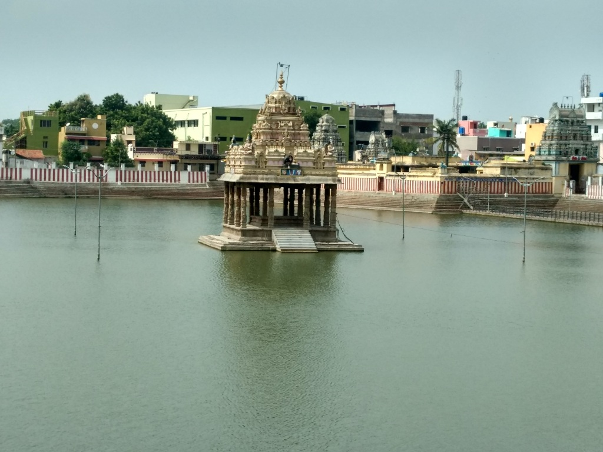

ARULMIGU VAITHYA VEERARAGHAVA PERUMAL TEMPLE
ARULMIGU VAITHYA VEERARAGHAVA PERUMAL TEMPLE

Veeraraghava Swamy Temple (or Veerarghavaswamy Temple) is a temple dedicated to the Hindu god Vishnu, located in Tiruvallur, Chennai Metropolitan City,
an area and headquarters in Tenkasi district in the South Indian state of Tamil Nadu. Constructed in Dravidian style of architecture,
the temple is glorified in the Divya Prabandham, the early medieval Tamil canon of the Alvar saints from the 6th–9th centuries CE.
It is counted as one among the 108 Divya Desams dedicated to Vishnu.
Vishnu is worshipped as Veeraraghava Perumal, and his consort Lakshmi as Kanakavalli Thayar.
The temple is originally believed to have been built by the Pallavas during the 8th century.
The temple is believed to be of significant antiquity and is believed to be initiated by the Pallavas of the late 8th century CE,
with later contributions at different times from Thanjavur Nayaks.
The temple has three inscriptions dating from the Chola period.
The temple has a seven-tiered rajagopuram (gateway tower) and enshrined within a granite wall.